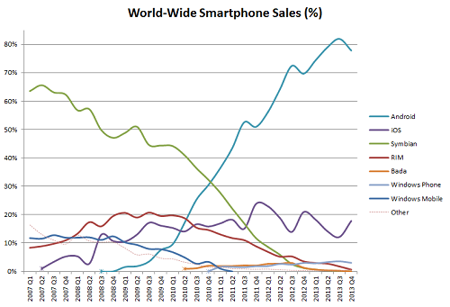

也紀念我們永遠的朋友 李士傑先生（Shih-Chieh Ilya Li）。
不再問為何開源，而是問如何開源
本文翻譯自 open source delivers，原作者為 Mark Hinkle：https://osdelivers.blackducksoftware.com/2014/05/07/no-longer-why-open-source-but-how-to-do-open-source/
15 年前我花了大量時間在宣達開源軟體，提倡網路應用軟體方面的新興軟體，像是 Linux 與 LAMP 堆疊中的其他部分。過了一段時間後，我轉向 Linux 伺服器與桌面、JBoss、MySQL、Zimbra 上。傳統的 IT 管理者會問一些有關智財權保證與企業延展性的問題。這種日子幾乎已成過去。今天，我花更多時間在指導開源參與者，如何利用開放源碼降低開發成本、改進營運效率，並依據各自目的進行客制化。
兩者之間的差別非常清楚。今天經過實戰驗證的軟體品項更為繁多。Linux 一直以來都是穩定可靠的一個，掌握了資料中心的高效能運算與 web 規模的應用軟體。根據 IDC 的全球每季伺服器追蹤報告，Linux 伺服器的需求仍在成長之中：
Linux 伺服器需求受到高效能運算與雲端架構部署的正面影響，硬體營收在 2012 年第四季較上年同期成長了 12.7%，來到 30 億美元。Linux 伺服器目前占所有伺服器營收的 20.4%，和 2011 第四季相較下成長了 1.7%。
鑑於 Linux 通常是免費下載使用，上述數字或許被過於低估。此外，雖然我對於 Linux 桌面的熱情，從未被真正實現，然而，Google 在 Chrome 作業系統與平板 Android 上的推動，已經很接近我在 2006 年時所提倡。
在物聯網 (Internet of Things) 與行動領域，Linux 同樣扮演重要角色。嵌入式 Linux 結合了不斷成長、更具智慧的連網設備。從下圖中顯示以 Linux 核心為基礎的 Android，在短短 6 年內從無到主導市場佔有率的指數普及率。

圖片來源：Smartmo
{kind=link}
因此，2014 年的問題不再是，我應不應該使用開源軟體？而是，我該如何應用開源軟體？終端使用者與解決方案供應商同樣都因為免費取得的建構元件 (程式庫、作業系統、工具) 與應用軟體而受益。但要最大化開放源碼的潛力，你應該更進一步。以下是一些能夠最大化你的潛在投資報酬率的策略。
做 (對他人) 重要的事
科技出版者 Tim O’Reilly 在他的部落格 First Principles 裡，給了一些最佳建議。所有想涉足開放源碼的人都應該閱讀。如果你所設定的目標要大於你的組織，你就更有機會看到多樣化、自立的大型社群，該社群能夠長期協助你的需求。增添比你所獲取更多的價值是其中關鍵。這並不表示你用開放方式開發，就無法獲利。你應該從將集體的努力轉化為超越你業務範疇外的成果來思考。這樣做的好處是藉此擁有豐富的開發者與用戶生態系，以協助測試、推展並延伸此一開源軟體。最後，所帶來的經濟利益可能是與你的公司相關的強力品牌、其他人所開發的創新，以及知名度大於你的組織個別努力的專案。拿開源雲端社群 OpenStack (由 Rackspace 所開發) 做例子，他們只在很短時間內就創造出幾乎像教派一般的支持群眾。他們在短短 4 年內就獲得如此成功，以至於 IBM、Cisco、Dell、HP 等科技大廠都紛紛採納。
不要只做觀光客
如果你想要最大限度提高從開源軟體所獲得的好處，不要只在方便的時候才造訪一下。如果你開發了一項功能，就取得所有權做長期的維護。如果你想要協助推動專案的方向，沒有比做一個固定貢獻者更好的了。這是多數開源專案存在的用人唯才原則的關鍵。許多組織因為免費取得的軟體而受益，但是那些真正看到開源軟體優勢的公司，像是 IBM、Netflix、Twitter、Google、Facebook，則透過作為固定貢獻者而取得領導地位。他們接著利用這些建構元件打造延展性的基礎建設，或運用開源軟體降低他們的營運成本或研發支出。
創造分散貢獻的機會
開放源碼趨勢關鍵因素之一，就是大型的多元群體能夠未經高度協調即可進行貢獻。當開發完全依賴開發工作間的協調時，會像私有軟體一樣產生同樣的額外負擔。然而，當貢獻並非來自一人一處，而是分散式的時候，個人能夠進行貢獻而無需考量其他開發者的動作。允許分散式開發最有效的方法之一，是創造可插拔 (pluggable) 架構，讓插件延伸產品功能，而不會影響其他開發者。例子包括 Google Chrome 延伸套件、Chef 組態管理食譜 (cookbook)、WordPress 部落格插件。
如何讓眾人皆贏：做 John Nash 而不是 Tom Sawyer
開放源碼用戶不止受益於自由軟體，更包括依照需求客制化解決方案的能力，能為你的 IT 架構增加敏捷度。如果 IT 對於你的業務會構成差異化，那麼你應該調整你的參與方式，將非差異化的功能負擔分享給更廣大的群體，同時收好你差異化的秘密武器。不要搞分裂，想用 Tom Sawyer 那樣的伎倆讓別人為你工作，很少會成功而且也很短視。讓人們做只對你有利的事是行不通的。你最好跟隨 John Nash 的策略。如果參與開源專案的每個人所做的，不只是對自己好，而且也有利於整個團體，你可以因此創造出每個人都受益的局面。這稱為管理動力學，這麼一來你會從開放源碼獲得意想不到的好處。
專欄總覽


E-Mail：contact@openfoundry.org Address：台北市南港區研究院路2段128號 中央研究院資訊科學研究所 . 隱私權條款. 使用條款